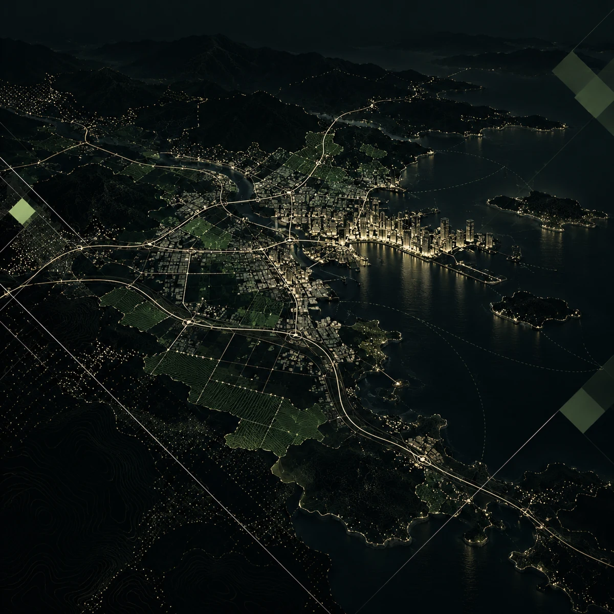
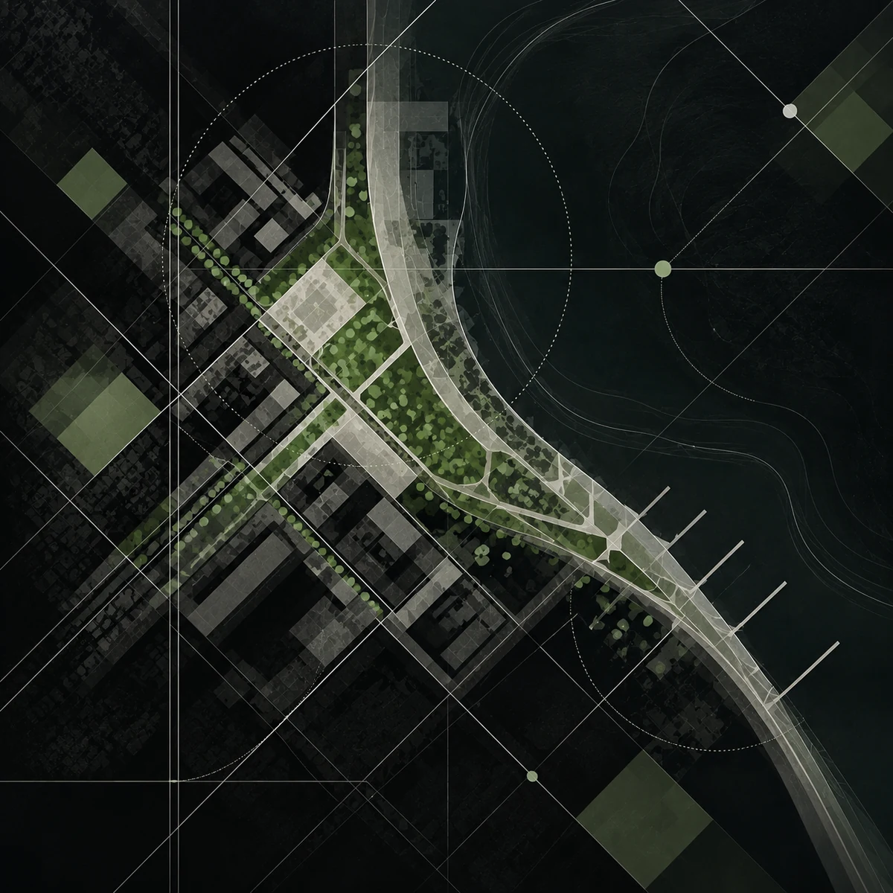
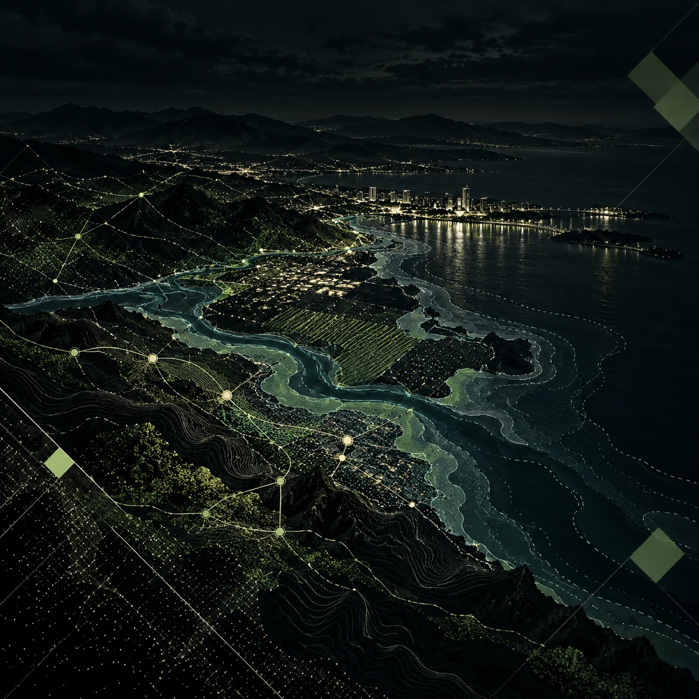
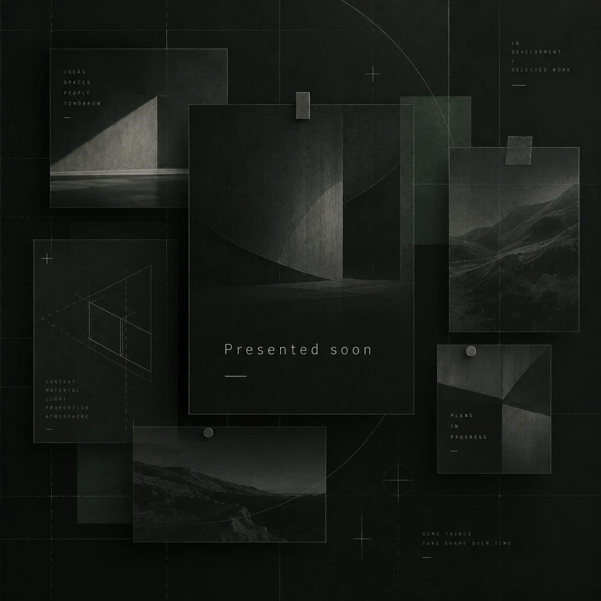

01 — Strategic Spatial Planning
Spatial strategies, territorial analysis, development frameworks, and planning guidance across multiple scales.

Planomorf is an urban R&D initiative working across strategic spatial planning, urban design, architecture, and GeoAI. We develop data-driven methodologies, decision-support systems, and spatial technologies for more resilient, measurable, and liveable places.
Planomorf works across strategic planning, urban design, climate resilience, and GeoAI-driven decision support. We combine research, methodology, and implementation-oriented thinking to help shape more measurable and liveable places.
Spatial strategies, territorial analysis, development frameworks, and planning guidance across multiple scales.

Design-led approaches for neighborhoods, public space, buildings, and place-based spatial transformation.

Climate adaptation, disaster risk, vulnerability assessment, and resilience-oriented planning.

Spatial analytics, GeoAI applications, and decision-support tools for evidence-based planning.
A selection of Planomorf’s ongoing and completed projects, research, and spatial strategies will be presented here soon.
